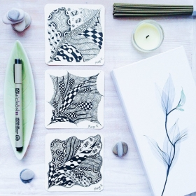

|
Сразу начну с П.С.- если вы уже получили это письмо и уже участвовали в наших курсах- прошу прощение за беспокойство. Просто проигнорируйте письмо :)
А если нет, то информация ниже специально для Вас.
Всем привет!
Это свершилось! Мы торжественно объявляем старт продаж на новый, уже 15-й поток курса «Зенарт. Творческая медитация для начинающих»!
20 января наш шаттл отправляется в свое первое путешествие в 2017 году.
Всех новых жителей «Рисующего города» ждет сюрприз – мы полностью пересняли весь курс. Больше узоров, больше полезных знаний и навыков, больше зенарта! Вас ждут не только новые плитки, художественные карточки и мандалы, но и новые БОНУСЫ. Их будет так много, в одном письме весь список не уместится.
Немного приоткрою свой новогодний мешок сюрпризов: вас ждет бонусный урок по рисованию белыми ручками на черной бумаге. Раньше такие творческие эксперименты мы проводили только с учениками продвинутого курса.
Об остальном пока тссс! Следите за новостями и рассылками.
А лучше записывайтесь прямо сейчас, потому что ДО КОНЦА ДЕКАБРЯ курс можно оплатить ПО СТАРОЙ ЦЕНЕ!
Занимайте лучшие места для себя или в подарок своим близким прямо сейчас, не откладывайте творчество, удовольствие, жизнь до «лучших времен», потому что они уже настали!
Итак, на курсе «Зенарт. Творческая медитация для начинающих» вас ждет:
-
1 месяц вдохновляющего и фееричного творческого процесса.
-
8 видео-уроков, которые выходят по вторникам и пятницам. Смотреть и пересматривать можно в любое время.
-
Методические материалы с подробными схемами и пошаговыми инструкциями узоров.
-
Победа над внутренним критиком, над постоянными сравнениями себя с другими и ожиданиями.
-
Потрясающий опыт расслабления, отключения от текущих проблем через рисование.
-
Творческие домашние задания.
-
Общение с единомышленниками со всего мира (да-да! У нас пока только из Антарктиды учеников не было, но мы работаем над этим).
-
И, конечно, ваши первые зенарт-шедевры!
|

Нарисовано на 1-м уроке
|
|
Нарисовано на 8-м уроке
|
Подробности о тарифах, зенарт и процессе обучения можно найти
на нашем сайте.
Там же можно попробовать первый урок абсолютно бесплатно!
|
Начните новый год с перемен! Мы ждем вас в "Рисующем Городе"
Алла Гурфинкель, автор курса
|
|
|